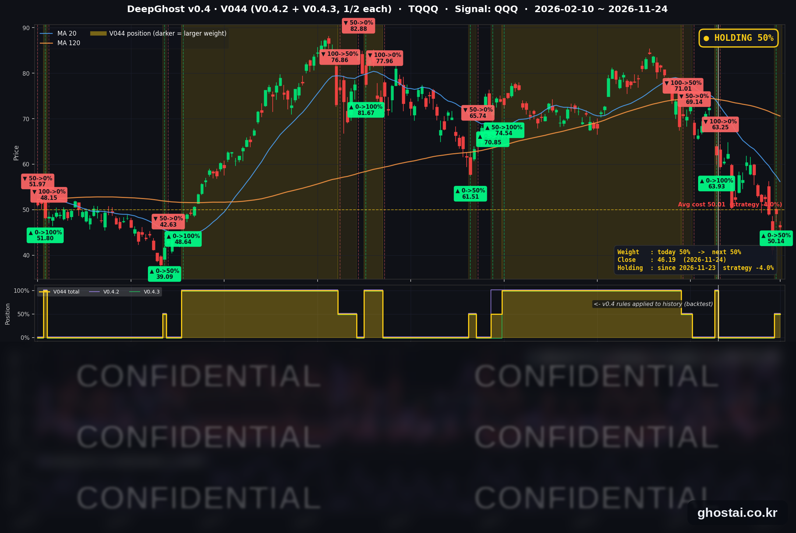

다우 5만 선 회복, 나스닥은 반도체 급락에 1.5% 하락·TQQQ 비중 50% 유지
· Ghost.AI 데일리 리포트
👻 매일 시그널과 히스토리를 홈페이지에서 한눈에 → www.ghostai.co.kr
회원 페이지 안내 — 회원 가입 데일리 레포트의 "오늘의 매매 신호"는 26년 12월 31일까지만 제공됩니다. 이후는 회원 페이지(무료) 에서 확인하시기 바랍니다.
나스닥은 1.48% 내리고 다우는 0.85% 올라 지수 방향이 엇갈렸습니다. 전일 크게 오른 반도체·하드웨어 종목이 많이 내렸지만, S&P 500 구성종목은 493개 중 346개가 올랐고 11개 업종 가운데 10개가 상승했습니다. 금리와 VIX 는 전일과 비슷했습니다. TQQQ 는 5.93% 내린 46.19달러로 마감했고, 전략은 새 신호 없이 비중 50% 를 유지합니다.
📊 오늘의 매매 신호
| 항목 | 내용 |
|---|---|
| 오늘의 신호 | 🟡 신규 신호 없음 — 전략은 TQQQ 비중 50% 보유를 유지합니다 |
| 전략 비중 | 50% → 다음 거래일 시가 50% |
| 포지션 상태 | 📈 TQQQ 일부 보유 중 (비중 50%) |
| 보유 시작일 | 2026-11-23 (2거래일째) |
| 매수 체결가 → 현재가 | $50.14 → $46.19 |
| 보유 기간 전략 수익률 | -3.98% |
TQQQ 시그널 — IN POSITION (비중 50%)
현재 상태: TQQQ 일부 보유 중 (비중 50%) | 보유 기간 전략 수익률 -3.98%

전략은 11월 23일(월) 미국 장 시가 50.14달러에 산 TQQQ 비중 50% 를 유지합니다. 오늘 새 매매 신호와 체결은 없습니다.
TQQQ 는 전일 종가보다 5.09% 낮게 출발해 5.93% 내린 46.19달러로 마감했습니다. 전일 19.17% 오른 폭의 37% 를 되돌렸고, 11월 20일 종가(41.20달러)보다는 12.11% 높습니다. 비중 50% 를 반영한 보유 기간 전략 수익률은 전일 -1.03% 에서 -3.98% 로 낮아졌습니다. 11월 2일 v0.4 공식 전환 이후 전략 수익률은 -2.06% 입니다.
홈페이지 「오늘의 시그널」은 v0.3 기준이라 오늘도 현금 보유로 표시됩니다. 이 글의 신호는 같은 AI 신호에 비중 조절을 더한 개선판 v0.4 기준이며, 자세한 화면은 회원 페이지에서 볼 수 있습니다.
오늘 미국 시장 — 시황 요약
지수 마감
| 지수 | 종가 | 등락률 | 시가 → 종가 |
|---|---|---|---|
| S&P 500 | 7,201.09 | -0.50% | +0.40% |
| 나스닥 종합 | 23,733.54 | -1.48% | -0.05% |
| 다우존스 | 50,018.70 | +0.85% | +1.06% |
| 러셀 2000 (IWM) | 267.14 | +0.53% | +1.18% |
| QQQ (나스닥100) | 638.10 | -1.99% | -0.30% |
| TQQQ | 46.19 | -5.93% | -0.89% |
다우가 0.8% 이상 오르고 나스닥이 1.4% 이상 내린 날은 2021년 3월 8일 이후 처음입니다. 다우는 11월 18일 이후 처음으로 50,000 위에서 마감했고, 8월 5일 최고 종가(54,349.12)보다는 7.97% 낮습니다.
네 지수(S&P 500·나스닥·다우·IWM) 모두 낮게 출발했습니다. 다우와 IWM 은 시가 이후 1% 넘게 올라 상승 마감했고, S&P 500 은 장중 -1.36% 에서 -0.50% 로 낙폭을 줄였습니다. 나스닥은 장중 2.63% 까지 내렸다가 시가 수준에서 마감했습니다.
S&P 500 은 최근 9거래일 중 8거래일 내렸습니다. 10월 6일 최고 종가보다 S&P 500 은 7.90%, 나스닥은 14.01% 낮고, 주요 지수는 모두 200일 이동평균선 아래입니다(다우 -1.49%, S&P 500 -2.04%, 나스닥 -5.69%).
국채 금리 동향
| 만기 | 11/23 | 11/24 | 전일 대비 |
|---|---|---|---|
| 3개월 | 4.147% | 4.168% | +2.1bp |
| 2년 (재무부 기준) | 4.63% | 4.63% | 0bp |
| 5년 | 4.728% | 4.712% | -1.6bp |
| 10년 | 4.918% | 4.904% | -1.4bp |
| 30년 | 5.294% | 5.292% | -0.2bp |
금리는 이틀 연속 변동이 크지 않았습니다. 소비자신뢰지수가 예상을 크게 웃돌았는데도 5년·10년물은 1~2bp 내렸습니다. 10년-3개월 스프레드는 약 74bp, 10년-2년(재무부 기준)은 28bp 로 역전은 없습니다. 중장기 금리가 소폭 내린 날이어서 반도체·하드웨어 하락을 금리 상승으로 설명하기는 어렵습니다.
연준 발언 & 금리 패스
- 11월 24일: 확인된 연준 위원 발언이 없었습니다.
- 최근 발언: 윌리엄스 뉴욕 연은 총재(투표권 상시, 11월 23일)는 물가가 "너무 높다"며 2% 로 되돌리는 일이 "100% 필수적"이라고 했습니다. 필요하다면 연속 회의 인상도 배제하지 않는다고 했습니다. 쿡 이사(11월 20일)는 "인상을 더 늦추면 뒤처질 위험이 있다"고 했고, 월러 이사(11월 18일)는 12월 50bp 인상 가능성을 언급했습니다.
- 금리 경로: 기준금리는 3.75~4.00% 입니다. 시장은 12월 8~9일 회의의 25bp 인상 확률을 약 95%, 50bp 인상 확률을 약 5% 로 보고 있습니다(CME 페드워치, 야후파이낸스·캡노트 인용). 회의 전 남은 주요 재료는 11월 25일 10월 PCE·베이지북과 12월 4일 11월 고용보고서입니다.
오늘의 핵심 이슈
- 하락은 반도체·하드웨어에 집중됐습니다. 업종별 등락률 중간값은 11개 업종 가운데 정보기술(-2.85%)만 내렸고 헬스케어(+2.25%)가 가장 많이 올랐습니다. 반도체·장비·서버·저장장치·통신장비 37종목의 중간값은 -7.23% 이고 오른 종목은 4개입니다. 반면 S&P 500 구성종목 전체의 중간값은 +1.00% 입니다. 전일 10% 넘게 오른 30종목 중 29종목이 내려, 전일 많이 오른 종목일수록 많이 내리는 경향이 뚜렷했습니다.
- 일부 반도체·서버 기업의 이익 전망이 기대에 못 미쳤습니다. 아날로그디바이스는 다음 분기 주당순이익 전망이 예상을 밑돌았고 주가는 17.37% 내렸습니다(1998년 5월 이후 최대 하락). HPE 는 클라우드·AI 부문 영업이익률을 약 14%(4분기 18.4%)로 제시했고 주가는 16.31% 내렸습니다(2015년 10월 상장 이후 최대 하락). 하락 배경은 보도마다 전일 급등분 되돌림, 이익 전망, 관세, AI 주가 부담으로 갈립니다. 앤트로픽은 공모가 83달러 아래로 내렸다고 AP·CNBC 가 전했습니다. 장 마감 뒤 델은 예상을 넘는 실적을 내고 연간 AI 서버 매출 전망을 740억 달러에서 780억 달러로 올렸습니다.
- 소비자신뢰지수 103.3, 관세 보도. 컨퍼런스보드 11월 소비자신뢰지수는 91.9 에서 103.3 으로 올라 예상(약 92)을 크게 웃돌았습니다. 월스트리트저널은 미국 정부가 중국·유럽연합 등 16개 경제권에 대한 새 관세를 준비하고 있으며 이르면 이번 주 조사 결과가 나올 수 있다고 보도했습니다. 세율과 시행일은 발표되지 않았습니다.
변동성 & 투자심리
VIX 는 26.36 으로 0.98% 내렸습니다. 나스닥이 1.48% 내렸는데도 오르지 않았지만, 11월 13일 종가(19.30)와 200일 평균(약 18.7)보다는 여전히 높습니다. 공포탐욕 지수는 17(극단적 공포)로 전일과 같습니다(feargreedmeter.com 표시값, 참고용).
매크로 & 원자재
| 품목 | 종가 | 등락률 |
|---|---|---|
| 원유 ETF (USO) | $135.43 | +1.55% |
| 금 ETF (GLD) | $325.45 | -2.27% |
원유(USO)는 전일 하락분의 약 3분의 1을 되찾았습니다. 로이터는 호르무즈 해협 선박 공격 보도 뒤 미국산 원유가 올랐다고 전했습니다. 금(GLD)은 전일 상승분의 약 4분의 3을 되돌렸고 1월 29일 최고 종가보다 34.37% 낮습니다.
주요 종목 동향
| 종목 | 종가 | 등락률 | 비고 |
|---|---|---|---|
| MU | 629.79 | -11.01% | 전일 +19.04%, 상승 폭의 69% 되돌림 |
| INTC | 54.80 | -8.15% | 전일 +16.34%, 시가 이후 4.32% 더 내림 |
| NVDA | 155.38 | -5.86% | 전일 +31.48%, 11월 20일 종가보다 23.78% 높음 |
| AVGO | 301.08 | -3.98% | 11월 20일 종가보다 1.09% 낮음 |
| META | 589.82 | -1.30% | |
| AMZN | 252.29 | -1.21% | |
| GOOGL | 279.05 | -1.08% | |
| QCOM | 164.96 | -0.25% | 2.90% 낮게 출발해 시가보다 2.72% 높게 마감 |
| TSLA | 384.68 | -0.20% | 전일 +11.46% 를 대부분 유지 |
| MSFT | 496.13 | +0.74% | |
| NFLX | 58.87 | +1.33% | |
| AAPL | 354.07 | +1.43% | 시가보다 1.71% 높게 마감 |
커버리지 12종목 중 9종목이 내리고 3종목이 올랐습니다. 커버리지 밖에서는 델이 정규장에서 11.83% 내렸고(실적은 장 마감 뒤 발표), 실적을 발표한 달러트리는 11.18% 올랐습니다. 사노피는 인스메드를 410억 달러에 인수하기로 했습니다(CNBC 보도).
다음 일정 (미 동부시간)
- 11/25(수) 08:30 10월 개인소득·지출(PCE, 예상 전년 대비 3.8% 안팎), 3분기 GDP 2차 추정치, 10월 내구재 주문 / 10:00 10월 신규 주택 판매 / 14:00 베이지북
- 11/26(목) 추수감사절 휴장
- 11/27(금) 13:00 조기 폐장, 08:30 10월 상품수지·소매/도매 재고 속보
- 12/1(화) 10:00 10월 구인·이직(JOLTS), 12/4(금) 08:30 11월 고용보고서
- 12/8~12/9 FOMC, 12/10(목) 08:30 11월 CPI
Ghost.AI — Quantitative AI Investment
Model: DeepGhost v0.4 | Transformer-Based Deep Learning
Coverage: 14 tickers | Updated every trading day after US market close
⚠️ 본 자료는 정보 제공 목적으로만 작성되었으며 투자 권유가 아닙니다. 모든 투자의 책임은 투자자 본인에게 있습니다. 과거 성과가 미래 수익을 보장하지 않습니다.
[유의사항]
- 본 서비스는 불특정 다수를 대상으로 발행되는 단방향 정보 제공 서비스이며, 투자자 개인의 재산 상황·투자 목적·위험 선호도를 반영한 개별 투자 조언이 아닙니다.
- 고스트에이아이 주식회사는 고객과 쌍방향 의사소통(개별 상담, 맞춤형 자문 등)을 제공하지 않습니다.
- 본 콘텐츠는 투자 권유 또는 매매 주문의 청약·청약의 권유에 해당하지 않으며, 최종 투자 판단 및 그에 따른 손익의 책임은 전적으로 투자자 본인에게 있습니다.
고스트에이아이 주식회사